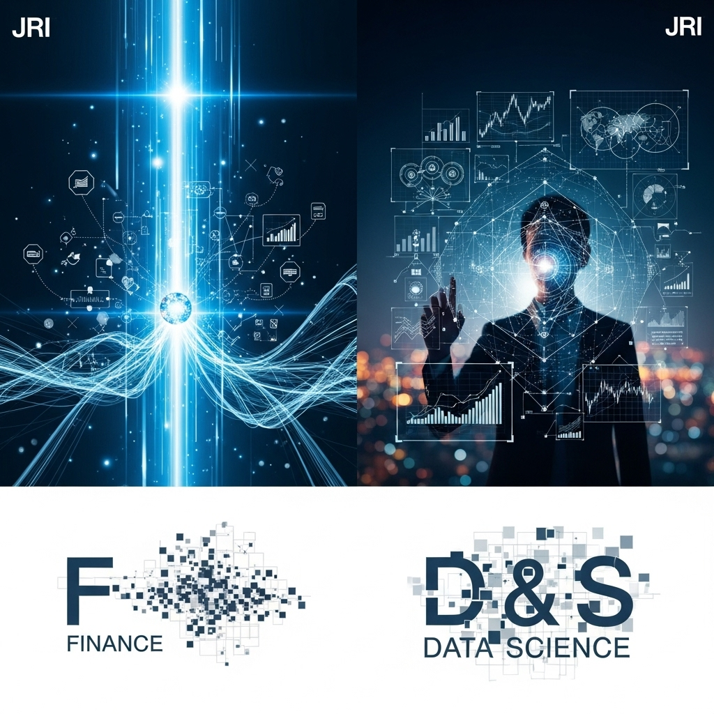
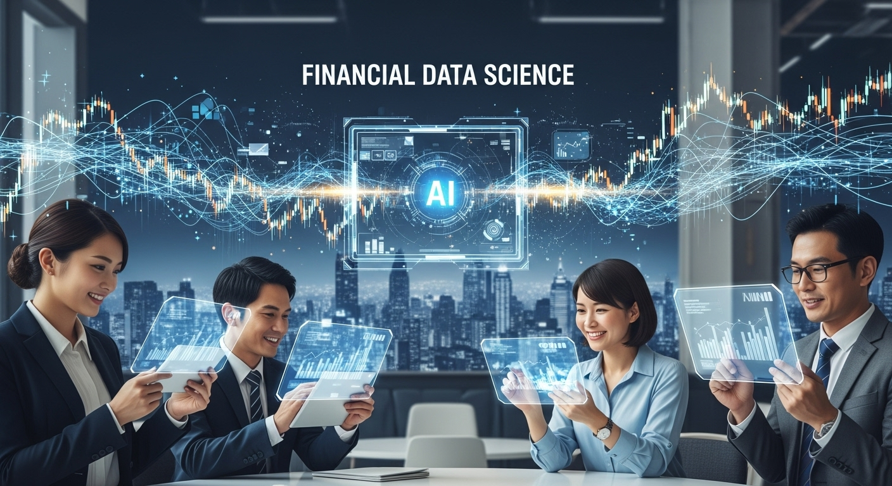
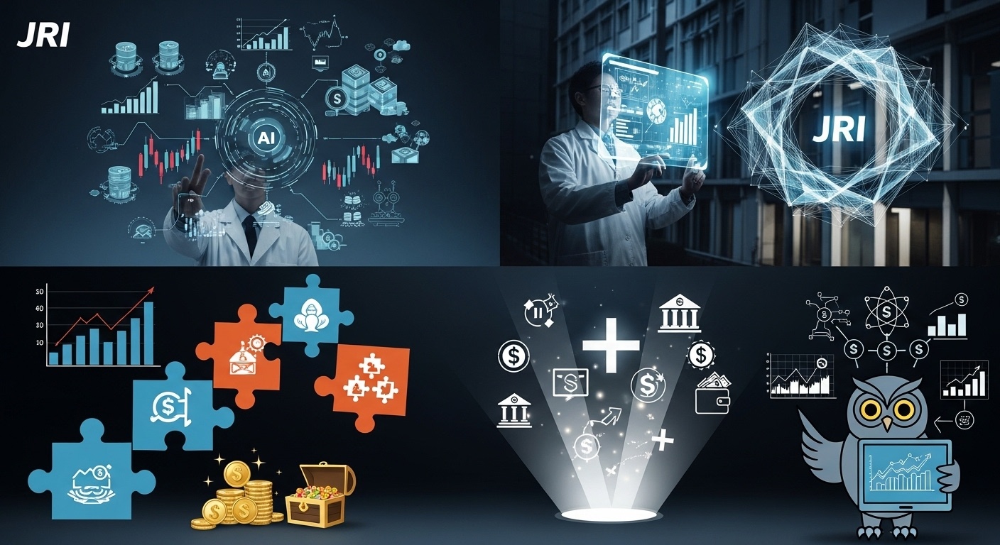
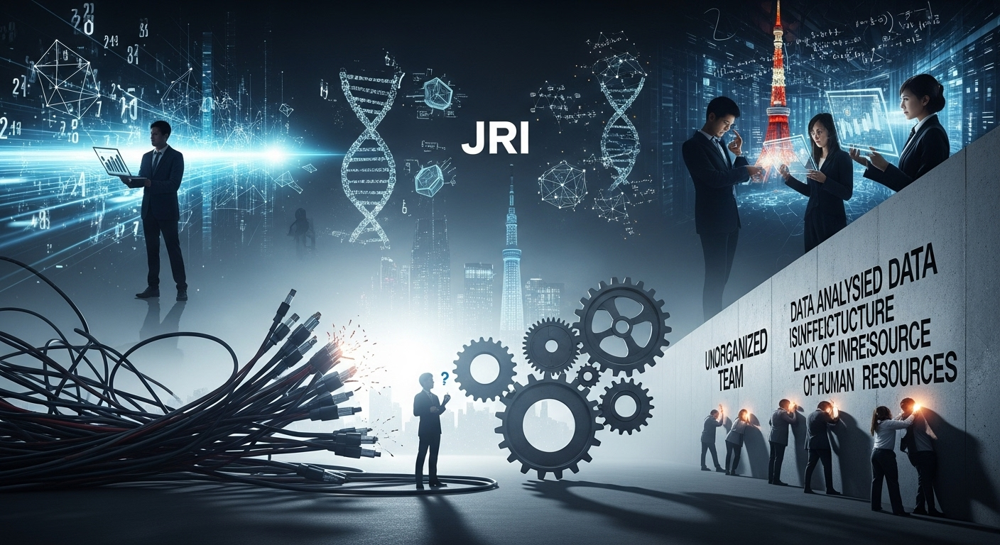

日本総研が牽引する金融データサイエンス最前線：実践事例とキャリアパス
導入
私たちの暮らしは、気づかないうちに膨大な「データ」と深く結びついています。朝、スマートフォンでニュースをチェックし、通勤電車でキャッシュレス決済を使い、インターネットで買い物をする。その一つひとつの行動がデータとして記録され、社会を動かす大きな力となっています。
特に、お金という社会の血液を循環させる金融業界にとって、この「データ」の価値は計り知れません。かつては、分厚い帳簿や熟練行員の「勘と経験」が頼りだった世界に、今、デジタル変革の大きな波が押し寄せています。その中心にあるのが、「データサイエンス」という羅針盤です。
データサイエンスとは、統計学やAI（人工知能）、コンピュータサイエンスなどの知識を駆使して、データの中からビジネスに役立つ知見や未来を予測するヒントを見つけ出す学問であり、技術です。金融業界では、この力を活用して、お客様一人ひとりに寄り添った新しいサービスを生み出したり、巧妙化する金融犯罪から資産を守ったり、より公正で効率的な金融システムを構築したりと、まさに革命ともいえる変化が起きています。
しかし、「金融データサイエンス」と聞くと、少し難しく、専門的なイメージを持たれるかもしれません。「具体的にどんなことをしているの？」「私たちの生活にどう関係があるの？」「そこで働く人たちは、どんなキャリアを歩んでいるの？」そんな疑問をお持ちの方も多いのではないでしょうか。
この記事では、日本の金融業界におけるデジタルトランスフォーメーション（DX）をリードする存在の一つである「株式会社日本総合研究所（日本総研）」の取り組みに光を当てながら、金融データサイエンスの「今」と「これから」を、できるだけ分かりやすく、そして深く解き明かしていきたいと思います。
日本総研は、日本を代表する金融グループであるSMBCグループの中核企業として、シンクタンク、コンサルティング、そしてITソリューションという三つの顔を持っています。その中でも、金融システムの開発・運用で培った豊富な知見と、最先端のデータサイエンス技術を融合させ、グループ全体のデータ活用を力強く推進しています。
この記事を通じて、金融データサイエンスが持つ無限の可能性と、その最前線で活躍するプロフェッショナルたちの世界を、少しでも身近に感じていただければ幸いです。データサイエンスに興味を持つ学生の方、金融業界でのキャリアチェンジを考えている方、自社のデータ活用に課題を感じているビジネスパーソンの方、そして、これからの社会がどう変わっていくのかに関心のあるすべての方へ。さあ、一緒に金融データサイエンスの奥深い世界への扉を開けてみましょう。
金融データサイエンスの重要性

なぜ今、これほどまでに金融業界で「データサイエンス」が重要視されているのでしょうか。それは、金融機関を取り巻く環境が、かつてないほど劇的に、そして急速に変化しているからです。顧客の価値観、競争のルール、社会からの要請。あらゆるものが変わりゆく中で、データサイエンスは、もはや「あれば便利なツール」ではなく、「なければ生き残れない必須の能力」となりつつあります。ここでは、その重要性を二つの側面から掘り下げてみたいと思います。
重要性１．金融業界におけるデータ活用
金融業界は、古くから「データ」と共に歩んできた歴史があります。預金残高、融資の記録、取引の履歴など、その業務の本質は、信頼できるデータを正確に管理し、処理することにありました。しかし、現代における「データ活用」は、その次元を大きく超えるものとなっています。
第一に、顧客ニーズの多様化と複雑化が挙げられます。スマートフォンが当たり前になり、情報収集から購買、決済までをオンラインで完結させるデジタルネイティブ世代が社会の中心になりつつあります。彼らは、画一的なサービスではなく、自分のライフスタイルや価値観にぴったりと合った、パーソナライズされた体験を求めます。例えば、「みんなにおすすめの投資信託」よりも、「子育て世代で、将来の教育費を心配している私に最適な資産形成プラン」を提案してくれる金融機関が選ばれる時代です。こうした個々のニーズをきめ細かく捉え、最適なタイミングで最適なサービスを届けるためには、顧客の行動データや属性データを深く分析するデータサイエンスの力が不可欠なのです。
第二に、競争環境の激化です。近年、「FinTech（フィンテック）」と呼ばれる、テクノロジーを武器に革新的な金融サービスを提供するスタートアップ企業が次々と登場しました。また、ITジャイアントや流通大手など、異業種からの参入も相次いでいます。彼らは、しがらみのない新しい発想と、データ活用を前提とした俊敏なサービス開発で、既存の金融機関の牙城を脅かしています。こうした新しい競争相手に対抗し、顧客から選ばれ続けるためには、伝統的な金融機関もまた、自らが持つ膨大なデータを「宝の山」として再認識し、それを競争力の源泉へと変えていく必要があります。データから新たなビジネスチャンスを発見し、業務プロセスを効率化し、顧客体験を向上させる。そのすべてにおいて、データサイエンスが羅針盤の役割を果たします。
第三に、リスク管理とコンプライアンスの高度化という側面も無視できません。グローバル化が進む現代において、マネー・ローンダリング（資金洗浄）やテロ資金供与対策、サイバー攻撃による不正利用など、金融機関が向き合うべきリスクはますます巧妙化・複雑化しています。従来のルールベース（「AならばB」というような、あらかじめ決められたルール）のチェックだけでは、未知の不正パターンを見抜くことは困難です。そこで、AIや機械学習を用いて、膨大な取引データの中から「普段と違う、怪しい動き」を瞬時に検知する異常検知システムが活躍します。これは、金融システムの健全性を守り、お客様の大切な資産を保護するという、金融機関の根源的な使命を果たす上でも、極めて重要な技術となっています。
このように、顧客との関係構築、競争力の維持、そして社会的な信頼の確保という、金融機関の経営におけるあらゆる側面で、データ活用、すなわちデータサイエンスの重要性は日に日に高まっているのです。
重要性２．日本総研のDX推進と戦略
こうした金融業界全体の大きな潮流の中で、日本総研はSMBCグループの頭脳であり、エンジンとして、デジタルトランスフォーメーション（DX）を力強く牽引しています。彼らが目指すのは、単なる業務のデジタル化ではありません。データとデジタル技術を駆使して、お客様が真に抱える課題を解決し、ひいては社会全体の課題解決に貢献すること。その壮大なビジョンの実現に向け、明確な戦略を持ってデータサイエンスに取り組んでいます。
日本総研の戦略の第一の柱は、グループ全体のデータ活用基盤の構築です。銀行、証券、クレジットカード、リースなど、SMBCグループには多種多様な金融サービスがあり、それぞれが膨大なデータを保有しています。しかし、かつてはそれらのデータが各社・各部署でバラバラに管理されている「サイロ化」という課題がありました。そこで日本総研は、これらのデータを安全かつ効率的に一元管理し、グループ横断で分析・活用できる最先端のデータプラットフォームを構築しています。これにより、例えば、銀行の取引履歴とクレジットカードの利用履歴を組み合わせることで、お客様のライフスタイルをより立体的に理解し、これまでになかった新しいサービスの提案が可能になります。
第二の柱は、専門家集団であるデータサイエンティストの育成と集約です。高度なデータ分析には、金融の専門知識、統計学や機械学習の理論、そしてプログラミング技術といった、多岐にわたるスキルが求められます。日本総研では、「データサイエンスラボ」といった専門組織を設け、こうした高度なスキルを持つプロフェッショナルを集約。彼らがグループ内外の様々な課題解決プロジェクトに参画し、その能力を最大限に発揮できる環境を整えています。さらに、後述するように、手厚い研修制度や資格取得支援を通じて、次世代のデータサイエンティストを継続的に育成することにも力を注いでいます。
第三の柱が、先進技術の積極的な研究・導入です。データサイエンスの世界は日進月歩です。日本総研は、現在のビジネス課題を解決するだけでなく、常に未来を見据え、AI、機械学習、さらには量子コンピュータといった次世代技術の研究開発にも積極的に投資しています。これらの技術が将来、金融サービスにどのような革新をもたらすのかをいち早く見極め、実用化に向けた研究や実証実験（PoC：Proof of Concept）を繰り返しています。
これらの戦略を通じて、日本総研が目指しているのは、単なるシステム開発会社やコンサルティング会社という枠組みを超えた存在、すなわち、お客様のビジネス変革に寄り添い、共に未来を創造する「共創パートナー」となることです。データという客観的な事実に基づき、お客様の課題の本質を深く洞察し、最適な解決策をテクノロジーの力で実現する。そのプロセス全体をリードしていくことこそ、日本総研が考えるDX推進の核心であり、その中でデータサイエンスが果たしている役割は、計り知れないほど大きいと言えるでしょう。
金融データサイエンスの活用事例

理論や戦略だけでは、データサイエンスの本当の姿はなかなか見えづらいかもしれません。ここでは、日本総研がSMBCグループと共に取り組んでいるであろう、より具体的な活用事例をいくつかご紹介し、データサイエンスがどのようにビジネスの現場で価値を生み出しているのかを見ていきましょう。
事例１．顧客行動分析とパーソナライズ
現代のマーケティングにおいて、「One to One」、つまりお客様一人ひとりに合わせたコミュニケーションは、もはや常識となりつつあります。金融業界も例外ではありません。データサイエンスは、このOne to Oneマーケティングを、かつてないほど高いレベルで実現するための強力な武器となります。
その根幹をなすのが、顧客行動分析です。金融機関には、お客様に関する多種多様なデータが眠っています。例えば、銀行口座の入出金履歴、クレジットカードの利用明細、投資信託の購入・売却履歴といった「取引データ」。そして、インターネットバンキングや公式アプリの利用ログ、どのページをどのくらいの時間見て、どこをクリックしたかといった「行動ログ」。さらに、年齢や性別、居住地といった「属性データ」。データサイエンティストは、これらの膨大なデータを統合し、分析することで、お客様の姿を鮮明に描き出していきます。
分析手法の一例として、顧客セグメンテーションがあります。これは、お客様をいくつかのグループ（セグメント）に分類する手法です。例えば、機械学習の「クラスタリング」という技術を使えば、データの中から似たような特徴を持つ顧客同士を自動的にグループ分けすることができます。その結果、「都心在住で、平日は外食が多く、週末は趣味にお金を使う若手ビジネスパーソン」「郊外在住で、スーパーでの利用が多く、子どもの教育費に関心が高いファミリー層」といった、具体的なペルソナ（顧客像）が浮かび上がってきます。
さらに、行動予測モデルを構築することも可能です。過去のデータから、「どのような行動をとったお客様が、将来、住宅ローンを契約する可能性が高いか」「どのような兆候が見られると、サービスの解約に至りやすいか」といったパターンをAIに学習させます。これにより、お客様の次のアクションを先回りして予測し、最適なタイミングでアプローチすることが可能になるのです。
これらの分析結果は、具体的な施策に結びついて初めて価値を生みます。例えば、AIが「近々、お子様が大学に進学する可能性が高い」と予測したお客様に対して、教育ローンのご案内をタイムリーに送る。投資に関心を示しているお客様がウェブサイトを訪れた際に、その方のリスク許容度に合わせた資産運用シミュレーションのコンテンツをトップページに表示する。こうしたパーソナライズされたアプローチは、お客様にとって「自分ごと」として情報が届くため、画一的な広告よりもはるかに高い効果が期待できます。
結果として、金融機関は顧客満足度を高め、長期的な信頼関係を築くことができます。それは、コンバージョン率（成約率）の向上や解約率の低下といったビジネス上の成果に直結するだけでなく、お客様一人ひとりの人生の節目に寄り添い、夢の実現をサポートするという、金融機関本来の役割を果たすことにも繋がるのです。
事例２．リスク管理・不正検知
金融機関のビジネスは、お客様からの「信頼」の上に成り立っています。その信頼を根底から揺るがしかねないのが、金融犯罪や予期せぬリスクです。データサイエンスは、この目に見えない脅威からお客様と金融システム全体を守る「番人」としても、極めて重要な役割を担っています。
最も代表的な活用事例が、クレジットカードの不正利用検知です。皆さんがお店やオンラインでカード決済をする、そのほんの0コンマ数秒の間に、裏側では高度なAIシステムが動いています。AIは、その取引が「いつ、どこで、いくら、何に使われたか」といった情報に加え、利用されたデバイスの情報や、お客様の過去の利用パターンなどを瞬時に分析。「普段は国内でしか使わないカードが、突然海外のサイトで高額決済されようとしている」「短時間に何度も立て続けに決済が試みられている」といった、通常とは異なる「異常」なパターンを検知します。そして、不正の疑いが非常に高いと判断した場合には、取引を自動的にブロックし、被害を未然に防ぐのです。
この「異常検知」の技術は、不正送金のモニタリングにも応用されています。フィッシング詐欺などで盗まれたIDとパスワードを使って、第三者が不正に預金を送金しようとする犯罪は後を絶ちません。ここでもAIは、ログインした時間帯や場所、振込先の口座、金額などを総合的に評価し、本人による操作である可能性が低いと判断すれば、追加の本人確認を求めたり、取引を一時的に保留したりする措置を取ります。
さらに、より大規模な犯罪であるアンチ・マネー・ローンダリング（AML）対策においても、データサイエンスは不可欠です。犯罪組織は、不正に得た資金の出所をわからなくするために、複数の口座を複雑に経由させるなど、巧妙な手口を使います。人間がすべての取引を目で見て監視するのは不可能です。そこで、データサイエンティストは「ネットワーク分析」といった手法を用い、口座間の資金の流れを可視化します。これにより、一見無関係に見える取引同士の繋がりの中から、組織的な犯罪のネットワークを浮かび上がらせ、捜査当局への報告を支援します。
これらのリスク管理は、不正を検知するだけでなく、与信審査モデルの高度化にも繋がります。融資を行う際、金融機関はその人がきちんと返済してくれるかどうか（信用リスク）を審査します。従来は、年収や勤務先、過去の延滞履歴などが主な判断材料でした。しかし、データサイエンスを活用することで、より多角的な情報から、より精緻にリスクを予測することが可能になります。これにより、これまで融資を受けにくかった個人事業主や若年層にも、新たな金融サービスの機会を提供できる可能性が広がります。
このように、データサイエンスは、金融犯罪という「悪意」から社会を守ると同時に、リスクを適切にコントロールすることで、より多くの人々に金融サービスを届けるという「善意」の側面も持ち合わせているのです。
事例３．新規金融商品・サービス開発
データサイエンスは、既存の業務を効率化したり、リスクを管理したりするだけでなく、これまで世の中になかった全く新しい金融商品やサービスを生み出す「創造のエンジン」にもなります。顧客自身もまだ気づいていない潜在的なニーズをデータから発掘し、それを形にすることで、新たな市場を切り拓くことができるのです。
そのための重要な情報源の一つが、お客様の「声」です。コールセンターに寄せられる問い合わせの音声データや、SNS上の投稿、アンケートの自由記述欄といった、構造化されていないテキストデータの中には、お客様の本音や不満、要望といった貴重なヒントが詰まっています。データサイエンティストは、自然言語処理（NLP）という技術を用いて、これらの膨大なテキストデータを分析します。例えば、「トピックモデリング」という手法を使えば、人々がどんな話題について話しているかを自動的に分類し、「最近、NISA（少額投資非課税制度）に関する問い合わせが増えているな」「アプリのこの機能について、使いにくいという意見が多いようだ」といったインサイトを得ることができます。
市場データや経済ニュースだけでなく、オルタナティブデータの活用も進んでいます。オルタナティブデータとは、従来は金融分析に使われてこなかった非伝統的なデータのことです。例えば、日々の買い物の決済データ（POSデータ）を分析すれば、どの業界が今伸びているのか、景気の動向をいち早く察知できます。スマートフォンの位置情報から得られる人流データを分析すれば、商業施設の賑わいを知ることができます。こうしたデータを活用することで、将来性のある投資テーマを発掘し、「eスポーツ」や「ウェルネス」といった、時代のトレンドを反映した新しいテーマ型投資信託を開発するといったことが可能になります。
さらに、こうした分析は、新しいビジネスモデルの創出にも繋がります。例えば、オルタナティブデータを活用した新しい与信モデルです。従来の金融機関では、事業実績の乏しいスタートアップ企業やフリーランスは、融資の審査に通りにくいという課題がありました。しかし、例えば、ECサイトの売上データや、SNSでの評判、物流データなどを与信判断の材料に加えることで、彼らの将来性や事業の健全性をより正確に評価できるかもしれません。これにより、これまで金融の恩恵を受けにくかった層に、新たな資金調達の道を開くことができます。
また、顧客の利用状況に応じて価格を変動させるダイナミックプライシングも、データサイエンスが可能にする新しいサービス形態です。例えば、安全運転を心がけているドライバーの保険料を、運転データを基に割り引くといった自動車保険は、その一例です。
このように、データサイエンスは、金融機関が社会の変化や人々の新しい価値観を敏感に捉え、それに応える形で自らを変革し、進化していくための羅針盤となります。データの中に眠る未来の種を見つけ出し、それを育てることで、金融の新しい価値を創造していく。それは、データサイエンティストにとって最もやりがいのある仕事の一つと言えるでしょう。
データサイエンティストの育成戦略
これまでに見てきたような高度なデータ活用を実現するためには、最先端のツールや潤沢なデータがあるだけでは不十分です。その中心には、データを価値に変える「人」、すなわち優秀なデータサイエンティストの存在が不可欠です。しかし、ビジネス課題を深く理解し、高度な分析技術を駆使し、その結果をビジネスアクションに繋げられる人材は、決して多くはありません。だからこそ、日本総研のような先進企業は、優秀な人材を惹きつけ、そして社内で育てていくための独自の育成戦略に力を入れています。
育成戦略１．実務とキャリアパス
データサイエンティストのスキルは、教科書を読んでいるだけでは決して身につきません。理論を学ぶことはもちろん重要ですが、それ以上に、生々しい現実のデータと向き合い、試行錯誤を繰り返す実務経験（OJT - On-the-Job Training）を通じてこそ、真の実力が磨かれます。
日本総研では、まさにこのOJTを育成の中核に据えています。新しく加わったメンバーは、早い段階からSMBCグループが実際に抱える、挑戦的でインパクトの大きなプロジェクトに参画する機会が与えられます。例えば、「クレジットカードの不正利用検知モデルの精度を、さらに0.1%向上させるにはどうすればよいか」「新しいアプリの利用者を増やすための、最も効果的なマーケティング施策は何か」といった、ビジネスの現場から生まれるリアルな課題に取り組みます。経験豊富な先輩データサイエンティストの指導を受けながら、データの収集・前処理から、モデルの構築・評価、そして事業部門への結果報告まで、一連のプロセスを実践的に学んでいくのです。こうした経験は、単なる技術の習得に留まらず、金融ドメインの知識や、関係者と円滑にコミュニケーションを取りながらプロジェクトを進める能力など、データサイエンティストとして不可欠な総合力を養う上で、かけがえのない財産となります。
また、一人ひとりのキャリアプランを尊重し、多様なキャリアパスが用意されていることも大きな特徴です。全員が同じ道を歩む必要はありません。
- スペシャリストコース：自然言語処理、画像認識、最適化計算、時系列解析といった特定の技術領域を深く、深く掘り下げ、その分野における第一人者を目指す道です。最新の学術論文を追いかけ、世界最先端のアルゴリズムを金融業務に応用することに情熱を燃やす人に最適です。
- ジェネラリストコース：幅広い業界知識と分析スキルをバランス良く身につけ、プロジェクト全体を俯瞰し、成功に導くプロジェクトマネージャーや、顧客の経営課題にまで踏み込むデータコンサルタントを目指す道です。技術とビジネスの架け橋となる役割を担います。
- ビジネス推進コース：自ら分析を行うだけでなく、データから得られたインサイトを基に、具体的なビジネス戦略を立案し、事業部門と一体となってその実行までをリードしていく道です。データ分析の価値を、最終的なビジネスインパクトに繋げることに強いやりがいを感じる人に向いています。
こうした多様なキャリアパスが示されていることで、社員は自身の興味や適性に合わせて、長期的な視点で自らの成長を描くことができます。社内には、様々なバックグラウンドを持つロールモデルとなる先輩たちが数多く在籍しており、メンター制度などを通じて、気軽にキャリアの相談ができる環境も整っています。個々の成長意欲に、組織として真摯に応えようとする姿勢が、優秀な人材が育ち、定着する土壌となっているのです。
育成戦略２．AI資格取得支援
日々の実務でスキルを磨くと同時に、自身の知識や技術を体系的に整理し、客観的な形で証明することも、プロフェッショナルとしての成長には欠かせません。特にAIやデータサイエンスのように、技術の進化が著しい分野では、基礎となる理論をしっかりと理解しておくことが、応用力を高める上で非常に重要になります。
そこで日本総研では、社員のAI関連資格の取得を積極的に支援する制度を充実させています。これは、学習を個人の努力だけに任せるのではなく、会社としてバックアップし、組織全体の技術レベルを底上げしようという明確な意思の表れです。
支援の対象となる資格は多岐にわたります。例えば、AIに関する基礎知識を問う「G検定（ジェネラリスト検定）」や、AIを実装するエンジニア向けのより高度な「E資格（エンジニア資格）」。データ分析の根幹をなす統計学の知識を証明する「統計検定」。そして、現代のデータ分析基盤に不可欠なクラウド技術に関する「AWS/Azure/GCP」といった主要なクラウドベンダーの認定資格。さらに、データベースやネットワークの専門知識を問う「情報処理技術者試験」など、データサイエンティストに関連する幅広い資格がカバーされています。
具体的な支援内容としては、受験費用の補助や、合格した際の奨励金（お祝い金）の支給などが挙げられます。これにより、社員は金銭的な負担を気にすることなく、積極的にスキルアップに挑戦することができます。
しかし、支援はそれだけではありません。資格取得を目指す社員同士が情報交換をしたり、既に合格した先輩から勉強のコツを教わったりできる社内勉強会が定期的に開催されています。また、外部の専門家を講師として招いたセミナーや、UdemyやCourseraといった世界的に有名なオンライン学習プラットフォームの受講費用を補助する制度など、インプットの機会も豊富に提供されています。
こうした制度を通じて資格を取得することは、個人のスキルアップや市場価値の向上に繋がることはもちろん、組織全体にとっても大きなメリットがあります。それは、顧客に対して「私たちは、これだけの専門知識を持ったプロフェッショナル集団です」という客観的な証明となり、信頼の獲得に繋がるからです。何より、学ぶことを奨励し、挑戦を称える文化が組織に根付くことこそが、変化の激しい時代を勝ち抜くための最も重要な資産となるのです。
育成戦略３．継続的な学習とスキルアップ
データサイエンスの世界では、「一度学んだら終わり」ということはあり得ません。昨日まで最新だった技術が、今日にはもう古くなっている、ということが日常茶飯事です。だからこそ、プロのデータサイエンティストには、常に新しい知識を吸収し、自らのスキルをアップデートし続ける継続的な学習（Lifelong Learning）の姿勢が強く求められます。
日本総研は、社員がこの継続的な学習を楽しみながら実践できるような、様々な仕組みと文化づくりに取り組んでいます。
その一つが、社内でのナレッジ共有の活発化です。各プロジェクトで得られた貴重な知見、例えば、ある分析で非常に効果的だったプログラミングのコードや、モデル構築の過程での失敗談とそこから得られた教訓、有用な外部ツールの情報などが、決して個人の中に留まることなく、社内Wikiなどの情報共有プラットフォームにドキュメントとして蓄積され、誰もがアクセスできるようになっています。これにより、組織全体として効率的に学び、同じ失敗を繰り返すことなく、成功のノウハウを横展開していくことが可能になります。
また、インプットの機会として、定期的な技術共有会や論文輪読会が開催されています。ここでは、社員が持ち回りで、最近注目している技術トレンドや、国際的な学会で発表された最先端の論文の内容を紹介し、参加者全員でディスカッションを行います。こうした場は、一人ではなかなか追い切れない最新情報を効率的にキャッチアップできるだけでなく、他のメンバーがどんなことに関心を持っているのかを知り、新たな刺激を受ける貴重な機会にもなっています。
さらに、社内だけに留まらず、国内外で開催されるトップレベルの学会や技術カンファレンスへの参加も積極的に奨励・支援しています。世界の第一線で活躍する研究者やエンジニアの発表を直接聞き、彼らと交流することは、視野を広げ、自身の立ち位置を客観的に知る上で、非常に有益な経験となります。
そして、学習をより実践的で楽しいものにする試みとして、Kaggle（カグル）に代表されるデータ分析コンペティションへの参加を推奨する文化もあります。Kaggleは、世界中のデータサイエンティストが、企業や研究機関から提示された課題に対し、予測モデルの精度を競い合うプラットフォームです。実世界のデータを使って、楽しみながら腕試しができるため、実践的なスキルを磨くには絶好の場です。
こうした仕組み以上に重要なのが、「心理的安全性」が確保された組織風土です。新しい技術への挑戦には、失敗がつきものです。その失敗を責めるのではなく、むしろ挑戦したことを称え、そこからの学びを組織の財産として共有する。わからないことがあれば、役職や経験に関係なく、誰にでも気軽に質問できる。そんなオープンで風通しの良い文化こそが、社員一人ひとりの知的好奇心を刺激し、組織全体の継続的な成長を支える土台となっているのです。
金融データサイエンスのメリット

データサイエンスを積極的に活用することは、金融機関に、ひいては社会全体にどのような恩恵をもたらすのでしょうか。ここでは、そのメリットを三つの側面に整理してみたいと思います。それは、より賢く、より正しく、そしてより強くなるための変革と言えるかもしれません。
メリット１．高度な分析力による課題解決
データサイエンスがもたらす最大のメリットは、人間の脳だけでは到底たどり着けないような、複雑な問題に対する深い洞察と、精度の高い解決策を導き出せる点にあります。
私たちの身の回りには、膨大なデータが溢れています。そのすべてに目を通し、そこに潜む意味のあるパターンや相関関係を見つけ出すことは、人間には不可能です。しかし、機械学習アルゴリズムは、何百万、何千万というデータの中からでも、人間では気づくことのできない微かなシグナルを捉えることができます。例えば、「特定の曜日の特定の時間帯に、特定のWebページを閲覧した顧客は、3ヶ月以内に新しい金融商品を契約する可能性が通常よりも5倍高い」といった、複雑な法則性を発見できるのです。これは、人間の認知能力の限界を超えることを意味します。
また、データサイエンスは精度の高い予測を可能にします。過去の膨大なデータから未来を予測するモデルを構築することで、私たちは「これから何が起こるか」を、ある程度の確率で見通すことができます。顧客の離反予測、株価の変動予測、融資の貸し倒れリスク予測など、その応用範囲は多岐にわたります。これにより、問題が発生してから対応する「リアクティブ（事後対応）」なアプローチから、問題が発生する前に先回りして手を打つ「プロアクティブ（事前対応）」なアプローチへと転換することができます。これは、ビジネスにおける無駄や損失を大幅に削減することに繋がります。
さらに、データ分析は、表面的な事象の背後にある根本原因の特定にも役立ちます。例えば、「なぜ、当社の若年層向けアプリの利用率が伸び悩んでいるのか」という課題があったとします。アンケート調査だけでは、漠然とした意見しか得られないかもしれません。しかし、アプリの操作ログデータを詳細に分析することで、「登録プロセスの特定の画面で離脱率が異常に高い」「特定の機能がほとんど使われていない」といった、具体的な問題点を客観的なデータで突き止めることができます。原因が明確になれば、打つべき対策も自ずと明らかになります。
そして、複数の選択肢の中から最善の答えを見つけ出す「最適化」も、データサイエンスの得意分野です。限られたマーケティング予算を、どの広告チャネルに、いくらずつ配分すれば最も効果が高まるか。あるいは、お客様のリスク許容度と期待リターンを最大化する資産の組み合わせ（ポートフォリオ）は何か。こうした複雑な組み合わせの問題に対して、数理最適化などの手法を用いることで、理論的に最も優れた解を導き出すことができるのです。
メリット２．信頼性の高いデータに基づく意思決定
ビジネスの世界では、日々、大小さまざまな意思決定が繰り返されています。その意思決定の質が、企業の将来を大きく左右すると言っても過言ではありません。データサイエンスは、この意思決定のプロセスを、より客観的で、透明性の高い、合理的なものへと変革する力を持っています。
かつての日本では、いわゆる「KKD（勘・経験・度胸）」に基づく意思決定が重んじられる風潮がありました。もちろん、長年の経験から培われた直感には価値がありますが、それが常に正しいとは限りませんし、個人の暗黙知に頼るやり方は、組織として再現性がなく、属人的です。データドリブンなアプローチは、こうしたKKDから脱却し、客観的な「データ」という共通言語の上で議論を行うことを可能にします。これにより、声の大きい人の意見や、過去の成功体験への固執といったバイアスを排除し、事実に基づいた冷静な判断を下すことができるようになります。
また、データに基づく意思決定は、そのプロセスの透明性を高め、説明責任を果たしやすくします。「なぜ、この戦略を選択したのか？」と問われた際に、「データ分析の結果、この選択肢が最も成功確率が高いと示されたからです」と、その根拠となるデータや分析モデルを明確に提示することができます。これは、経営層が現場の提案を評価する際や、株主や顧客といったステークホルダーに対して経営判断を説明する際に、非常に重要となります。
さらに、意思決定のスピードを劇的に向上させる効果もあります。市場環境や顧客のニーズが目まぐるしく変化する現代において、何か月もかけて議論を重ねていては、ビジネスチャンスを逃してしまいます。リアルタイムで更新されるデータをダッシュボードなどで可視化し、その変化を常にモニタリングできる環境があれば、異変の兆候をいち早く察知し、迅速に次のアクションを起こすことができます。Plan（計画）-Do（実行）-Check（評価）-Action（改善）のPDCAサイクルを、データに基づいて高速で回していくことが、競争優位性を維持する鍵となります。
そして、何よりも、データに基づいた意思決定は、ビジネスに伴うリスクを低減します。新しいサービスを始める前に、過去の類似事例のデータから需要を予測したり、様々なシナリオをシミュレーションしたりすることで、失敗の確率を少しでも減らすことができます。不確実性の高い時代において、データという羅針盤を持つことは、企業が未知の航海へと乗り出す際の、大きな安心材料となるのです。
メリット３．競争力強化と新たな価値創造
データサイエンスの活用は、業務の効率化やリスク管理といった「守り」の側面だけでなく、企業の競争力を高め、新たな価値を生み出す「攻め」の側面においても、絶大な効果を発揮します。
その最も直接的な効果は、顧客体験（CX - Customer Experience）の劇的な向上です。前述のパーソナライゼーションの事例のように、データ分析を通じてお客様一人ひとりを深く理解し、その人にとって本当に価値のある情報やサービスを、最適なタイミングで提供することができれば、顧客満足度は飛躍的に高まります。満足したお客様は、その金融機関のファンとなり、継続的にサービスを利用してくれるだけでなく、良い口コミを広めてくれるかもしれません。優れた顧客体験は、価格競争から脱却し、長期的な顧客ロイヤルティを築くための最も強力な武器となります。
また、業務効率化とコスト削減にも大きく貢献します。これまで人間が手作業で行っていた定型的な事務作業や、データ入力、簡単な問い合わせ対応などをAIやRPA（Robotic Process Automation）で自動化することで、大幅な生産性向上が見込めます。これにより、従業員は、より創造的で付加価値の高い、人間にしかできない業務、例えば、お客様との対話を通じた深い課題のヒアリングや、新しいサービスの企画立案といった仕事に集中できるようになります。これは、従業員のモチベーション向上にも繋がります。
そして、データサイエンスは、既存のビジネスの枠組みを超えた、新たなビジネスモデルの創出を可能にします。金融機関が保有する決済データや信用情報は、それ自体が非常に価値の高い資産です。これらのデータを、プライバシーに配慮した形で匿名加工し、他の企業に提供することで、新たな収益源を生み出す「データマネタイゼーション」というビジネスも考えられます。また、異業種の企業とデータを連携させることで、全く新しいサービスを生み出すことも可能です。例えば、金融とヘルスケアを組み合わせ、日々の健康活動が保険料の割引に繋がるサービスや、金融とモビリティを組み合わせ、自動車の走行データに基づいた新しいローン商品などが考えられます。
これらの取り組みは、結果として企業ブランド価値の向上に繋がります。「あの会社は、データとテクノロジーを駆使して、常に新しい価値を提供してくれる先進的な企業だ」というイメージが社会に浸透すれば、顧客からの信頼が高まるだけでなく、優秀な人材を惹きつける採用力も強化されるでしょう。データサイエンスへの投資は、未来の企業価値を創造するための、最も重要な先行投資の一つなのです。
金融データサイエンス活用の課題

ここまで金融データサイエンスがもたらす輝かしいメリットについて述べてきましたが、その道のりは決して平坦ではありません。実際にデータ活用を推進しようとすると、多くの企業が様々な壁に直面します。ここでは、その代表的な三つの課題について、現実的な視点から考えてみたいと思います。
課題１．データプライバシーとセキュリティ
金融機関が扱うデータは、お客様の資産状況や取引履歴、個人情報など、極めて機微性の高い情報を含んでいます。そのため、データ活用を進める上では、プライバシーの保護とセキュリティの確保が絶対的な大前提となります。この点を疎かにしては、お客様からの信頼を失い、企業の存続そのものが危うくなる可能性があります。
まず、個人情報保護法をはじめとする国内外の法規制を遵守することが不可欠です。特に、EUのGDPR（一般データ保護規則）は、違反した場合に巨額の制裁金が科されることで知られており、グローバルに事業を展開する金融機関にとっては無視できない法律です。日本国内でも、個人情報保護法は年々改正が重ねられ、データの利用目的を明確に本人に通知し、同意を得ることの重要性や、個人を特定できないように加工した「匿名加工情報」の取り扱いルールなどが厳格に定められています。データサイエンティストは、これらの法律を正しく理解し、許された範囲の中で分析を行わなければなりません。
次に、サイバー攻撃などによる情報漏洩のリスクです。金融機関は、常に悪意のあるハッカーたちの標的となっています。万が一、顧客データが外部に流出すれば、金銭的な被害はもちろんのこと、企業の評判に計り知れないダメージを与えます。そのため、データを保管するサーバーの物理的なセキュリティから、ネットワークへの不正アクセスを防御するファイアウォール、データの暗号化、アクセス権限の厳格な管理まで、多層的なセキュリティ対策を講じる必要があります。データ分析環境を構築する際には、利便性だけでなく、いかに安全性を担保するかという視点が極めて重要になります。
さらに、技術的な問題だけでなく、倫理的な配慮（AI倫理）も大きな課題となっています。例えば、AIによる与信審査モデルが、意図せず特定の属性（性別、人種、出身地など）を持つ人々に対して、不利益な判断を下してしまう「アルゴリズムバイアス」という問題が指摘されています。これは、AIの学習データに過去の社会的な偏見が反映されていることなどが原因で起こります。こうした差別的なAIを生み出さないために、データの偏りを是正したり、モデルの公平性を常に監視したりする仕組みが必要です。また、AIの判断プロセスがブラックボックス化し、「なぜそのような結論に至ったのか」を人間が説明できないという問題もあります。特に、お客様に不利益な判断を伝える際には、その理由をきちんと説明する責任があります。そのため、AIの判断根拠を可視化する「説明可能なAI（XAI - Explainable AI）」の研究開発が、世界的に重要なテーマとなっています。
課題２．人材確保とスキルギャップ
データサイエンスを推進するための最大のボトルネックは、しばしば「人」であると言われます。高度なデータ分析スキルを持つ専門人材の需要は、金融業界に限らず、あらゆる産業で急増しており、世界的な争奪戦が繰り広げられています。優秀なデータサイエンティストを採用し、そして自社に留まってもらうことは、多くの企業にとって非常に困難な課題となっています。
データサイエンティストに求められるスキルは、一つではありません。一般的に、「ビジネス力」「データサイエンス力」「データエンジニアリング力」の三つが必要とされます。「ビジネス力」とは、金融業務のドメイン知識を持ち、ビジネス上の課題がどこにあるのかを発見する能力です。「データサイエンス力」は、統計学や機械学習の理論を理解し、適切な分析手法を選択・実装する能力。「データエンジニアリング力」は、膨大なデータを収集・加工し、分析可能な状態に整えるためのプログラミングやデータベースの技術です。これら三つのスキルをすべて高いレベルで兼ね備えた「スーパーマン」のような人材は、極めて稀です。そのため、それぞれの強みを持つメンバーが集まり、互いに協力し合えるチームをいかにして組成するかが鍵となります。
外部からの採用が難しい以上、社内の既存社員を育成し、リスキリング（学び直し）していくことも重要になります。長年、金融業務に携わってきたベテラン社員は、深いドメイン知識という大きな強みを持っています。彼らがデータサイエンスのスキルを身につけることができれば、鬼に金棒です。しかし、そのためには、新しいことを学ぶ意欲をどう引き出すか、日々の忙しい業務と学習をどう両立させるか、そして、どのような教育プログラムを提供すれば効果的なのか、といった多くのハードルを越えなければなりません。
そして、たとえ優秀なデータサイエンティストがいたとしても、彼らが孤立していては価値を生み出すことはできません。分析結果が実際のビジネスアクションに繋がらなければ、それは「宝の持ち腐れ」です。しばしば、データサイエンティストが所属する専門部署と、営業や商品開発といった事業部門との間に、「言葉の壁」や文化の違いが存在します。データサイエンティストは専門用語を多用しがちで、事業部門の人はその分析結果が具体的に何の役に立つのかをイメージできない。こうしたコミュニケーションの断絶が、データ活用プロジェクトが失敗に終わる大きな原因の一つとなっています。両者の間に立ち、通訳として機能する「ビジネス翻訳者」のような役割を担う人材の存在が、ますます重要になっています。
課題３．既存システム連携と導入コスト
多くの伝統的な金融機関が抱える根深い問題が、「レガシーシステム」の存在です。何十年も前に構築され、長年にわたって改修が繰り返されてきた巨大で複雑な基幹システムは、現代的なデータ分析を行う上での大きな足かせとなります。データが、商品ごと、部署ごとにバラバラのデータベース（サイロ）に格納されており、それらを統合して横断的に分析することが非常に困難なケースが少なくありません。新しいデータ分析基盤を導入しようにも、この複雑怪奇なレガシーシステムとの連携が、技術的にもコスト的にも大きな障壁となるのです。
また、仮にデータを集めることができたとしても、そのデータの品質（データクオリティ）が低いという問題にも直面します。入力ミスによる表記の揺れ、必要な情報が入力されていない欠損値、同じ顧客が二重に登録されている重複データなど、現実のデータは「汚い」ことがほとんどです。データ分析プロジェクトに費やす時間の実に8割は、こうしたデータを綺麗にし、分析可能な形に整える「データクレンジング」や「前処理」といった地味な作業に費やされる、とも言われています。この作業を効率化し、高品質なデータを安定的に供給するためのデータガバナンス体制の構築は、データ活用を成功させるための生命線です。
当然ながら、こうしたデータ分析基盤の構築や、専門人材の採用・育成には、多額の初期投資がかかります。高性能なサーバーやクラウドサービスの利用料、高価な分析ソフトウェアのライセンス料、そしてデータサイエンティストの高い人件費。しかし、データサイエンスへの投資は、その効果がすぐに見えるとは限りません。成果が出るまでに数ヶ月、あるいは数年かかることも珍しくありません。そのため、短期的な利益を重視する経営層から、「一体、その投資はいつ、いくらのリターンを生むのか？（ROI - 投資対効果）」と問われ、プロジェクトが途中で頓挫してしまうケースもあります。データ活用の重要性を経営トップが深く理解し、長期的な視点で粘り強く投資を続ける覚悟があるかどうかが、成否を分ける大きなポイントとなります。
最後に、技術選定の難しさも挙げられます。クラウド、AI、データベース、可視化ツールなど、データサイエンスに関連するテクノロジーは、まさに百花繚乱の状態です。次々と新しいサービスやツールが登場するため、自社の課題やスキルレベル、予算に照らし合わせて、最適な技術スタック（技術の組み合わせ）を見極めることは、専門家にとっても容易なことではありません。誤った技術選定は、後々の拡張性や運用コストに大きな影響を与えるため、慎重な判断が求められます。
金融データサイエンスの未来
数々の課題を乗り越えた先に、金融データサイエンスはどのような未来を切り拓いていくのでしょうか。テクノロジーの進化と社会の変化が加速する中で、その役割はますます大きく、そして多岐にわたっていくことが予想されます。ここでは、その未来像を三つの視点から展望してみたいと思います。
未来１．AI・機械学習の進化と応用
データサイエンスの中核をなすAI・機械学習技術は、今この瞬間も驚異的なスピードで進化を続けています。これらの技術がより高度化し、社会に浸透していくことで、金融サービスは根本からその姿を変えていくでしょう。
近年、大きな注目を集めているのが生成AI（Generative AI）です。文章や画像、プログラムコードなどを自動で生成するこの技術は、金融業界においても様々な応用が期待されています。例えば、お客様からの問い合わせに対して、人間のように自然な言葉で対話し、最適な回答を生成する高度なチャットボット。市場の動向や企業の財務データを分析し、投資家向けのレポートや融資の稟議書を自動で作成するシステム。さらには、データサイエンティストが「こんな分析がしたい」と自然な言葉で指示するだけで、必要な分析コードを自動生成してくれるアシスタント。こうした技術は、金融業務の生産性を飛躍的に向上させ、人間がより創造的な仕事に集中できる環境を生み出していくはずです。
一方で、AIの判断プロセスが不透明であるという「ブラックボックス問題」を解決するための説明可能なAI（XAI）の研究も、ますます重要になります。特に、融資の審査や保険の引き受け、不正検知といった、お客様の人生に大きな影響を与える判断については、AIが「なぜ」そのような結論に至ったのかを、人間が理解できる形で説明できることが強く求められます。XAI技術が発展すれば、AIの判断の妥当性を検証し、万が一バイアスがあった場合にもそれを是正することが容易になります。これにより、私たちはAIをより安心して、信頼して活用できるようになるでしょう。
さらに、機械学習モデルの構築プロセスそのものを自動化するAutoML（Automated Machine Learning）の技術も進化を続けています。これまでデータサイエンティストが専門的な知識と経験を頼りに行っていた、データの前処理や特徴量の設計、最適なアルゴリズムの選択といった作業を、AIが自動で行ってくれるようになります。これにより、データサイエンティストは、モデル作りの細かな技術的作業から解放され、より上流の「ビジネス課題をどう定義するか」や、分析結果を「どう解釈し、ビジネスに活かすか」といった、本質的な業務に多くの時間を割けるようになります。
将来的には、常に変化し続ける市場環境の中で、AIが自ら試行錯誤を繰り返し、最適な行動を学習していく「強化学習」の応用も進むでしょう。例えば、リアルタイムで変動する株価やニュースを読み解き、人間のトレーダーを超えるパフォーマンスで資産運用を行うAIや、経済状況の変化に応じて、最適な金融政策を提言するAIが登場するかもしれません。AIは、単なる分析ツールから、自律的に判断し行動するパートナーへと進化していくのです。
未来２．ESG投資など新たな領域への貢献
金融の役割は、単に利益を追求するだけではありません。社会が抱える課題を解決し、より良い未来を築くことに貢献するという、大きな使命を担っています。金融データサイエンスは、この社会的な役割を果たす上でも、強力な推進力となります。
その代表的な例が、ESG投資の分野です。ESGとは、環境（Environment）、社会（Social）、ガバナンス（Governance）の頭文字を取ったもので、企業の長期的な成長のためには、この三つの観点への配慮が不可欠であるという考え方です。投資家は、企業の財務情報だけでなく、ESGへの取り組みを評価して、投資先を選別するようになっています。データサイエンスは、このESG評価を、より客観的で、信頼性の高いものへと進化させます。
例えば、企業が発行する統合報告書やサステナビリティレポートといった膨大なテキストデータを、自然言語処理技術で分析し、その企業のESGへの取り組み内容や姿勢を定量的にスコアリングする。あるいは、人工衛星から撮影された画像データを解析し、工場の排水による環境汚染の状況を監視したり、企業のサプライチェーンを遡って、人権侵害などのリスクがないかを分析したりする。こうしたオルタナティブデータの活用は、企業が自ら開示する情報だけでは見えてこない、ESGの「実態」を浮き彫りにします。
こうした分析は、環境問題や社会課題の解決に貢献するプロジェクトや企業に、より多くの資金が流れるように後押しする「サステナブルファイナンス」を加速させます。また、投融資が実際に社会や環境にどれだけのポジティブな影響（インパクト）を与えたのかを、データに基づいて定量的に測定し、可視化することも可能になります。
さらに、近年深刻化している気候変動リスクの分析においても、データサイエンスは不可欠です。台風や洪水といった自然災害の増加が、企業の工場や資産にどのような物理的な損害を与えるのか。あるいは、低炭素社会への移行に伴う政策の変更や技術革新が、特定の産業（例えば、化石燃料関連産業）の収益性にどのような影響（移行リスク）を与えるのか。こうした複雑なリスクをシミュレーションし、金融機関が持つ投融資ポートフォリオの健全性を評価するために、高度なデータ分析が用いられています。
金融データサイエンスは、お金の流れを、地球と社会の持続可能性を高める方向へと導くための、強力な羅針盤となっていくのです。
未来３．デジタル変革をリードする役割
金融データサイエンティストの役割は、ただ黙々とコンピュータに向かって分析をすることだけではありません。彼らは、データという武器を手に、組織全体のデジタル変革をリードし、新しい文化を創り出す「変革の担い手」としての役割を期待されています。
その最も重要な役割の一つが、データドリブンな文化の醸成です。データサイエンティストは、自らの分析を通じて、データに基づいた意思決定がいかにパワフルであるかを、具体的な成功事例をもって組織内に示していく必要があります。彼らは、データ活用の重要性を説き、その面白さや可能性を伝える「伝道師（エバンジェリスト）」として、経営層から現場の社員まで、あらゆる階層の人々の意識改革を促していきます。勉強会を開催したり、分かりやすい分析レポートを作成したり、気軽にデータに触れられるツールを導入したりと、組織のデータリテラシーを向上させるためのあらゆる活動を主導します。
また、全社的にデータ活用を進めるためには、その土台となるルール作りが不可欠です。データサイエンティストは、全社的なデータガバナンスの構築においても中心的な役割を果たします。データの品質をいかに担保するか、セキュリティやプライバシーをどう守るか、誰がどのデータにアクセスできるのかといったルールを設計し、誰もが安心して、かつ効率的にデータを活用できる環境を整備します。
そして、彼らはビジネスとテクノロジーの架け橋として機能します。経営層や事業部門に対して、データから得られたインサイトを、専門用語を使わずに分かりやすく伝え、戦略的な意思決定を支援する。その一方で、世の中で生まれている最新のテクノロジーが、自社のビジネスにどのような価値をもたらす可能性があるかを常に考え、積極的に提言する。この両方向のコミュニケーションを通じて、テクノロジーの可能性を、真のビジネス価値へと転換していくのです。
究極的には、金融データサイエンスで培われた知見や技術は、金融業界の枠を超えて、より広い社会課題の解決に応用されていく可能性を秘めています。例えば、地域の決済データを分析して、商店街の活性化や、より効果的な観光政策の立案に貢献する。あるいは、金融のノウハウを、医療や教育、行政といった分野のデータ活用に応用し、より効率的で質の高い社会サービスの実現に貢献する。金融データサイエンティストは、社会全体のデジタル変革をリードする、未来の社会インフラを支える重要な存在となっていくでしょう。
まとめ
この記事では、「日本総研が牽引する金融データサイエンス最前線」と題し、その重要性から具体的な活用事例、人材育成の戦略、そして未来の展望に至るまで、多角的な視点から金融データサイエンスの世界を旅してきました。
私たちは、金融業界が今、顧客ニーズの多様化や異業種との競争激化といった大きな環境変化の真っ只中にあり、その中でデータサイエンスが生き残りのための必須の羅針盤となっていることを確認しました。そして、SMBCグループのDXを推進する日本総研が、データ活用基盤の構築、専門人材の育成、そして先進技術の研究という明確な戦略のもと、この変革をリードしている姿を見てきました。
顧客一人ひとりに寄り添うパーソナライズ、巧妙化する金融犯罪から社会を守るリスク管理、そして世の中にない新しい価値を生み出すサービス開発。これらの具体的な事例からは、データサイエンスがもはや机上の空論ではなく、ビジネスの現場でリアルな価値を生み出している息吹を感じていただけたのではないでしょうか。
もちろん、その道のりは平坦ではありません。プライバシー保護やセキュリティという重い責任、高度なスキルを持つ人材の確保という高い壁、そしてレガシーシステムという根深い課題。しかし、日本総研をはじめとする先進企業は、実務を通じた人材育成や、継続的な学習を支える文化の醸成といった地道な努力を重ねることで、これらの課題に真摯に向き合っています。
私たちがこれから迎える未来において、金融データサイエンスの役割は、さらに大きく、そして重要になっていくことは間違いありません。生成AIをはじめとする技術の進化は、金融サービスのあり方を根底から変えるでしょう。そして、その力は、ESG投資の推進など、より良い社会を築くための大きなうねりへと繋がっていきます。
この記事を通して、金融データサイエンスという世界が、少しでも身近で、そして魅力的なものに感じられたなら、これに勝る喜びはありません。この分野は、一部の専門家だけのものではありません。その根底にあるのは、「データを通じて、世の中をより良くしたい」という、シンプルで力強い想いです。
未来を創る主役は、この記事を読んでくださっている、あなた自身かもしれません。データと真摯に向き合う一人ひとりの情熱と探求心こそが、これからの金融、そして社会の新しい扉を開いていく原動力となるのです。金融データサイエンスが切り拓く未来に、どうぞご期待ください。